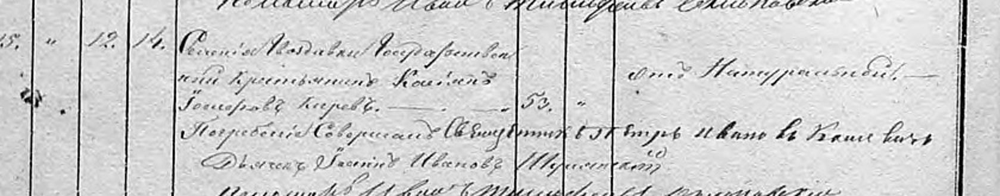
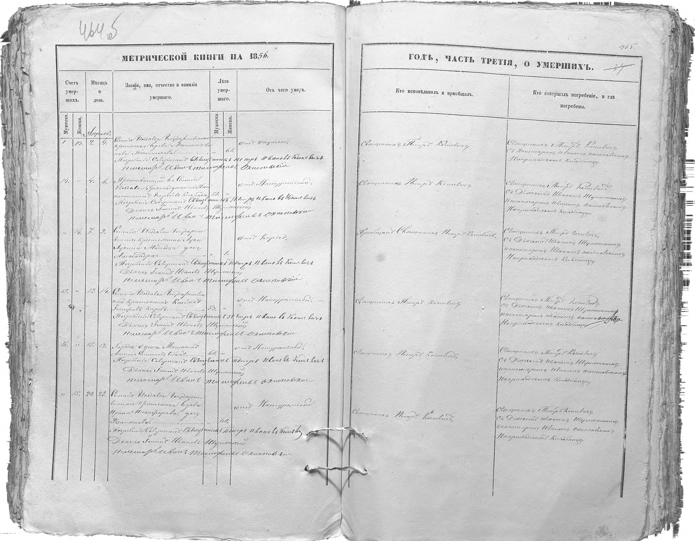
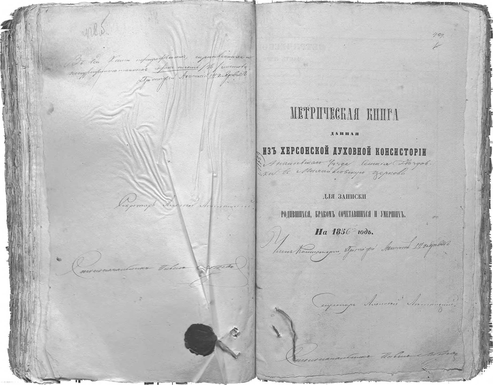

Гвоздавка · ДАОО 37/3/1212 · перевірено 14 листопада 2026 року
Нова зачіпка, спорідненість не доведена. Державний селянин Василь Йосипович Корой помер 12/24 квітня 1856 року, у 52 роки. Дата народження в записі відсутня; приблизно 1803–1804 — розрахунок за віком.

ГВОЗДАВКА, 1856: ВАСИЛЬ ЙОСИПОВИЧ КОРОЙ Дослідження Codex, 14.11.2026 СТАТУС Знайдений оригінальний метричний запис про носія родинного прізвища у Гвоздавці. Спорідненість із родиною Ольги Пачесної НЕ встановлена. Це окремий кандидат для дослідження, не доведений прямий предок. ДЖЕРЕЛО Державний архів Одеської області (ДАОО), фонд 37, опис 3, справа 1212. Метрична книга Михайлівської церкви села Гвоздавка, Ананьївський повіт, 1856 рік. Титул: зображення 376 у DJVU, арк. 429. Запис про смерть: зображення 407 у DJVU, арк. 464 зв. – 465, чоловічий № 15, четвертий запис на розвороті. Нумерація зображень у цьому звіті починається з 1; це НЕ номери зображень FamilySearch. Оригінальний файл архіву: https://archive.od.gov.ua/wp-content/old-files/EL_ARH/M/0037/0037_03/1201-1300/0037_03_1212_DAOO.djvu ПРОЧИТАНО В ОРИГІНАЛІ «Селенія Гвоздавки Государственный крестьянинъ Василій Іосифовъ Корей». Нормалізоване українське ім'я: Василь Йосипович Корой (написання прізвища в документі — Корей). Помер: 12 квітня 1856 року ст. ст. / 24 квітня 1856 року н. ст. Похований: 14 квітня 1856 року ст. ст. / 26 квітня 1856 року н. ст. Вік: 52 роки. Стан: державний селянин. Місце приписки, назване в записі: село Гвоздавка. Точне місце народження не зазначене. Запис не доводить, що він народився у Гвоздавці. Дата народження не зазначена. Приблизно 1803–1804 роки — лише розрахунок за записаним віком; він може бути неточним. Дружину, дітей, матір і дату шлюбу цей запис не називає. Причина смерті записана формулою «отъ Натуральной»; сучасний медичний діагноз з неї не виводимо. ЧОМУ ЦЕ ЗАЧІПКА На сайті вже згадані інші Йосиповичі Корої: Никита (помер 1906 року, записаний вік 90), Тимофій (1907, 80), Яків (1904, 71). Василь розширює перелік людей з таким самим прізвищем і по батькові до покоління приблизно 1803–1804 року народження. Це новий орієнтир для пошуку ранніх шлюбів, хрещень дітей і ревізьких казок. Однакові прізвище й по батькові НЕ доводять братерства. Орієнтовні роки народження цих людей охоплюють майже 30 років; можливі різні батьки на ім'я Йосип і похибки у віці. Зв'язок Василя із Сергієм Панкратовичем Короєм не встановлений. У пряме дерево його поки не приєднано. Перед підготовкою звіту звірено матеріали репозиторію станом на коміт 954dd28ab6cc65fae71d05605d1b57b7ea01363c; такого запису у тексті index.html не виявлено. ЩО ЩЕ ПЕРЕВІРЕНО 14.11.2026 1855, справа 37/3/1183: переглянуті зображення народжень 363–382 і смертей 390–397. Частина почерку бліда; це не повна поіменна транскрипція і не доказ відсутності родичів у книзі. Шлюби 383–389 перевірялися раніше. 1856, справа 37/3/1212: завершений перегляд доступного розділу смертей 402–411; підсумок на 412. Народження 377–393 і шлюби 394–401 переглядалися раніше. У розділі є інші сумнівні читання прізвищ, які до підтверджених результатів не включені. 1887: повторно звірений скан смерті Гаврила Андрійовича Спінатія, зображення 56, арк. 54 (файл сайту smert-1887-spinatii-gavriil-dadul-serhii-hq.jpg). Вік читається 57, а не 87. Це не усуває суперечності з 42-річним нареченим 1849 року; автоматично об'єднувати цих людей не можна. Архівний опис ДАХмО 226/79 містить справу 4496, ревізькі казки 1834 року з назвою Гвоздавка серед населених пунктів Балтського повіту. Саму справу онлайн не знайдено; належність цієї Гвоздавки до потрібної родинної локації не встановлена. Це лише каталожна згадка, не знайдений документ про родича. ЗАСТЕРЕЖЕННЯ ЩОДО РОБОЧИХ ЧИТАНЬ Робоче припущення «Іван Васильович Рубля» на зображенні 395 книги 1855 року НЕ підтвердилося при збільшенні. Не використовувати його як знахідку; прізвище не прочитане надійно. ФАЙЛИ research-1856-title-376.jpg — титул книги, повне зображення. research-1856-deaths-407.jpg — повний розворот із записом Василя, без зміни змісту. research-1856-vasyl-yosypovych-koroi-detail.jpg — збільшений контрастний фрагмент для читання; звіряти з повним розворотом. research-gvozdavka-1856.html — звіт зі сканами. research-gvozdavka-1856.txt — цей текст. research-1856-manifest.json — контрольні суми файлів і походження.

